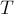
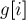
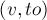

MAXimal
добавлено: 10 Jun 2008 20:55
редактировано: 18 Aug 2011 22:50
Содержание [скрыть]
Минимальное остовное дерево. Алгоритм Прима
Дан взвешенный неориентированный граф  с
с  вершинами и
вершинами и  рёбрами. Требуется найти такое поддерево этого графа, которое бы соединяло все его вершины, и при этом обладало наименьшим возможным весом (т.е. суммой весов рёбер). Поддерево — это набор рёбер, соединяющих все вершины, причём из любой вершины можно добраться до любой другой ровно одним простым путём.
рёбрами. Требуется найти такое поддерево этого графа, которое бы соединяло все его вершины, и при этом обладало наименьшим возможным весом (т.е. суммой весов рёбер). Поддерево — это набор рёбер, соединяющих все вершины, причём из любой вершины можно добраться до любой другой ровно одним простым путём.
Такое поддерево называется минимальным остовным деревом или просто минимальным остовом. Легко понять, что любой остов обязательно будет содержать  ребро.
ребро.
В естественной постановке эта задача звучит следующим образом: есть городов, и для каждой пары известна стоимость соединения их дорогой (либо известно, что соединить их нельзя). Требуется соединить все города так, чтобы можно было доехать из любого города в другой, а при этом стоимость прокладки дорог была бы минимальной.
Алгоритм Прима
Этот алгоритм назван в честь американского математика Роберта Прима (Robert Prim), который открыл этот алгоритм в 1957 г. Впрочем, ещё в 1930 г. этот алгоритм был открыт чешским математиком Войтеком Ярником (Vojtěch Jarník). Кроме того, Эдгар Дейкстра (Edsger Dijkstra) в 1959 г. также изобрёл этот алгоритм, независимо от них.
Описание алгоритма
Сам алгоритм имеет очень простой вид. Искомый минимальный остов строится постепенно, добавлением в него рёбер по одному. Изначально остов полагается состоящим из единственной вершины (её можно выбрать произвольно). Затем выбирается ребро минимального веса, исходящее из этой вершины, и добавляется в минимальный остов. После этого остов содержит уже две вершины, и теперь ищется и добавляется ребро минимального веса, имеющее один конец в одной из двух выбранных вершин, а другой — наоборот, во всех остальных, кроме этих двух. И так далее, т.е. всякий раз ищется минимальное по весу ребро, один конец которого — уже взятая в остов вершина, а другой конец — ещё не взятая, и это ребро добавляется в остов (если таких рёбер несколько, можно взять любое). Этот процесс повторяется до тех пор, пока остов не станет содержать все вершины (или, что то же самое, ребро).
В итоге будет построен остов, являющийся минимальным. Если граф был изначально не связен, то остов найден не будет (количество выбранных рёбер останется меньше ).
Доказательство
Пусть граф был связным, т.е. ответ существует. Обозначим через  остов, найденный алгоритмом Прима, а через  — минимальный остов. Очевидно, что действительно является остовом (т.е. поддеревом графа ). Покажем, что веса и совпадают.
— минимальный остов. Очевидно, что действительно является остовом (т.е. поддеревом графа ). Покажем, что веса и совпадают.
Рассмотрим первый момент времени, когда в происходило добавление ребра, не входящего в оптимальный остов . Обозначим это ребро через , концы его — через  и
и  , а множество входящих на тот момент в остов вершин — через
, а множество входящих на тот момент в остов вершин — через  (согласно алгоритму, , , либо наоборот). В оптимальном остове вершины и соединяются каким-то путём
(согласно алгоритму, , , либо наоборот). В оптимальном остове вершины и соединяются каким-то путём  ; найдём в этом пути любое ребро
; найдём в этом пути любое ребро  , один конец которого лежит в , а другой — нет. Поскольку алгоритм Прима выбрал ребро вместо ребра , то это значит, что вес ребра больше либо равен весу ребра .
, один конец которого лежит в , а другой — нет. Поскольку алгоритм Прима выбрал ребро вместо ребра , то это значит, что вес ребра больше либо равен весу ребра .
Удалим теперь из ребро , и добавим ребро . По только что сказанному, вес остова в результате не мог увеличиться (уменьшиться он тоже не мог, поскольку было оптимальным). Кроме того, не перестало быть остовом (в том, что связность не нарушилась, нетрудно убедиться: мы замкнули путь в цикл, и потом удалили из этого цикла одно ребро).
Итак, мы показали, что можно выбрать оптимальный остов таким образом, что он будет включать ребро . Повторяя эту процедуру необходимое число раз, мы получаем, что можно выбрать оптимальный остов так, чтобы он совпадал с . Следовательно, вес построенного алгоритмом Прима минимален, что и требовалось доказать.
Реализации
Время работы алгоритма существенно зависит от того, каким образом мы производим поиск очередного минимального ребра среди подходящих рёбер. Здесь могут быть разные подходы, приводящие к разным асимптотикам и разным реализациям.
Тривиальная реализация: алгоритмы за и
Если искать каждый раз ребро простым просмотром среди всех возможных вариантов, то асимптотически будет требоваться просмотр  рёбер, чтобы найти среди всех допустимых ребро с наименьшим весом. Суммарная асимптотика алгоритма составит в таком случае
рёбер, чтобы найти среди всех допустимых ребро с наименьшим весом. Суммарная асимптотика алгоритма составит в таком случае  , что в худшем случае есть
, что в худшем случае есть  , — слишком медленный алгоритм.
, — слишком медленный алгоритм.
Этот алгоритм можно улучшить, если просматривать каждый раз не все рёбра, а только по одному ребру из каждой уже выбранной вершины. Для этого, например, можно отсортировать рёбра из каждой вершины в порядке возрастания весов, и хранить указатель на первое допустимое ребро (напомним, допустимы только те рёбра, которые ведут в множество ещё не выбранных вершин). Тогда, если пересчитывать эти указатели при каждом добавлении ребра в остов, суммарная асимптотика алгоритма будет  , но предварительно потребуется выполнить сортировку всех рёбер за , что в худшем случае (для плотных графов) даёт асимптотику
, но предварительно потребуется выполнить сортировку всех рёбер за , что в худшем случае (для плотных графов) даёт асимптотику  .
.
Ниже мы рассмотрим два немного других алгоритма: для плотных и для разреженных графов, получив в итоге заметно лучшую асимптотику.
Случай плотных графов: алгоритм за 
Подойдём к вопросу поиска наименьшего ребра с другой стороны: для каждой ещё не выбранной будем хранить минимальное ребро, ведущее в уже выбранную вершину.
Тогда, чтобы на текущем шаге произвести выбор минимального ребра, надо просто просмотреть эти минимальные рёбра у каждой не выбранной ещё вершины — асимптотика составит  .
.
Но теперь при добавлении в остов очередного ребра и вершины эти указатели надо пересчитывать. Заметим, что эти указатели могут только уменьшаться, т.е. у каждой не просмотренной ещё вершины надо либо оставить её указатель без изменения, либо присвоить ему вес ребра в только что добавленную вершину. Следовательно, эту фазу можно сделать также за .
Таким образом, мы получили вариант алгоритма Прима с асимптотикой  .
.
В частности, такая реализация особенно удобна для решения так называемой евклидовой задачи о минимальном остове: когда даны точек на плоскости, расстояние между которыми измеряется по стандартной евклидовой метрике, и требуется найти остов минимального веса, соединяющий их все (причём добавлять новые вершины где-либо в других местах запрещается). Эта задача решается описанным здесь алгоритмом за времени и памяти, чего не получится добиться алгоритмом Крускала.
Реализация алгоритма Прима для графа, заданного матрицей смежности ![g[][]](../tex2png/cache/beaca7ad3bd83d8cabfe8d60a891403a.png) :
:
// входные данные int n; vector < vector<int> > g; const int INF = 1000000000; // значение "бесконечность" // алгоритм vector<bool> used (n); vector<int> min_e (n, INF), sel_e (n, -1); min_e[0] = 0; for (int i=0; i<n; ++i) { int v = -1; for (int j=0; j<n; ++j) if (!used[j] && (v == -1 || min_e[j] < min_e[v])) v = j; if (min_e[v] == INF) { cout << "No MST!"; exit(0); } used[v] = true; if (sel_e[v] != -1) cout << v << " " << sel_e[v] << endl; for (int to=0; to<n; ++to) if (g[v][to] < min_e[to]) { min_e[to] = g[v][to]; sel_e[to] = v; } }
На вход подаются число вершин и матрица размера  , в которой отмечены веса рёбер, и стоят числа
, в которой отмечены веса рёбер, и стоят числа  , если соответствующее ребро отсутствует. Алгоритм поддерживает три массива: флаг
, если соответствующее ребро отсутствует. Алгоритм поддерживает три массива: флаг ![{\rm used}[i] = {\rm true}](../tex2png/cache/4d1d3f6c6a13c74d965e295dc753fddd.png) означает, что вершина
означает, что вершина  включена в остов, величина хранит вес наименьшего допустимого ребра из вершины , а элемент содержит конец этого наименьшего ребра (это нужно для вывода рёбер в ответе). Алгоритм делает шагов, на каждом из которых выбирает вершину
включена в остов, величина хранит вес наименьшего допустимого ребра из вершины , а элемент содержит конец этого наименьшего ребра (это нужно для вывода рёбер в ответе). Алгоритм делает шагов, на каждом из которых выбирает вершину  с наименьшей меткой , помечает её
с наименьшей меткой , помечает её  , и затем просматривает все рёбра из этой вершины, пересчитывая их метки.
, и затем просматривает все рёбра из этой вершины, пересчитывая их метки.
Случай разреженных графов: алгоритм за
В описанном выше алгоритме можно увидеть стандартные операции нахождения минимума в множестве и изменение значений в этом множестве. Эти две операции являются классическими, и выполняются многими структурами данных, например, реализованным в языке C++ красно-чёрным деревом set.
По смыслу алгоритм остаётся точно таким же, однако теперь мы можем найти минимальное ребро за время  . С другой стороны, время на пересчёт указателей теперь составит
. С другой стороны, время на пересчёт указателей теперь составит  , что хуже, чем в вышеописанном алгоритме.
, что хуже, чем в вышеописанном алгоритме.
Если учесть, что всего будет пересчётов указателей и поисков минимального ребра, то суммарная асимптотика составит — для разреженных графов это лучше, чем оба вышеописанных алгоритма, но на плотных графах этот алгоритм будет медленнее предыдущего.
Реализация алгоритма Прима для графа, заданного списками смежности :
// входные данные int n; vector < vector < pair<int,int> > > g; const int INF = 1000000000; // значение "бесконечность" // алгоритм vector<int> min_e (n, INF), sel_e (n, -1); min_e[0] = 0; set < pair<int,int> > q; q.insert (make_pair (0, 0)); for (int i=0; i<n; ++i) { if (q.empty()) { cout << "No MST!"; exit(0); } int v = q.begin()->second; q.erase (q.begin()); if (sel_e[v] != -1) cout << v << " " << sel_e[v] << endl; for (size_t j=0; j<g[v].size(); ++j) { int to = g[v][j].first, cost = g[v][j].second; if (cost < min_e[to]) { q.erase (make_pair (min_e[to], to)); min_e[to] = cost; sel_e[to] = v; q.insert (make_pair (min_e[to], to)); } } }
На вход подаются число вершин и списков смежности:  — это список всех рёбер, исходящих из вершины , в виде пар (второй конец ребра, вес ребра). Алгоритм поддерживает два массива: величина хранит вес наименьшего допустимого ребра из вершины , а элемент содержит конец этого наименьшего ребра (это нужно для вывода рёбер в ответе). Кроме того, поддерживается очередь  из всех вершин в порядке увеличения их меток . Алгоритм делает шагов, на каждом из которых выбирает вершину с наименьшей меткой (просто извлекая её из начала очереди), и затем просматривает все рёбра из этой вершины, пересчитывая их метки (при пересчёте мы удаляем из очереди старую величину, и затем кладём обратно новую).
из всех вершин в порядке увеличения их меток . Алгоритм делает шагов, на каждом из которых выбирает вершину с наименьшей меткой (просто извлекая её из начала очереди), и затем просматривает все рёбра из этой вершины, пересчитывая их метки (при пересчёте мы удаляем из очереди старую величину, и затем кладём обратно новую).
Аналогия с алгоритмом Дейкстры
В двух описанных только что алгоритмах прослеживается вполне чёткая аналогия с алгоритмом Дейкстры: он имеет такую же структуру ( фаза, на каждой из которых сначала выбирается оптимальное ребро, добавляется в ответ, а затем пересчитываются значения для всех не выбранных ещё вершин). Более того, алгоритм Дейкстры тоже имеет два варианта реализации: за и (мы, конечно, здесь не учитываем возможность использования сложных структур данных для достижения ещё меньших асимптотик).
Если взглянуть на алгоритмы Прима и Дейкстры более формально, то получается, что они вообще идентичны друг другу, за исключением весовой функции вершин: если в алгоритме Дейкстры у каждой вершины поддерживается длина кратчайшего пути (т.е. сумма весов некоторых рёбер), то в алгоритме Прима каждой вершине приписывается только вес минимального ребра, ведущего в множество уже взятых вершин.
На уровне реализации это означает, что после добавления очередной вершины в множество выбранных вершин, когда мы начинаем просматривать все рёбра  из этой вершины, то в алгоритме Прима указатель  обновляется весом ребра , а в алгоритме Дейкстры — метка расстояния
обновляется весом ребра , а в алгоритме Дейкстры — метка расстояния ![d[to]](../tex2png/cache/055ebcf2759a1e84a08f5a359acfc850.png) обновляется суммой метки
обновляется суммой метки ![d[v]](../tex2png/cache/1d6e1859e7756da32846240db3a97517.png) и веса ребра . В остальном эти два алгоритма можно считать идентичными (хоть они и решают совсем разные задачи).
и веса ребра . В остальном эти два алгоритма можно считать идентичными (хоть они и решают совсем разные задачи).
Свойства минимальных остовов
- Максимальный остов также можно искать алгоритмом Прима (например, заменив все веса рёбер на противоположные: алгоритм не требует неотрицательности весов рёбер).
- Минимальный остов единственен, если веса всех рёбер различны. В противном случае, может существовать несколько минимальных остовов (какой именно будет выбран алгоритмом Прима, зависит от порядка просмотра рёбер/вершин с одинаковыми весами/указателями)
- Минимальный остов также является остовом, минимальным по произведению всех рёбер (предполагается, что все веса положительны). В самом деле, если мы заменим веса всех рёбер на их логарифмы, то легко заметить, что в работе алгоритма ничего не изменится, и будут найдены те же самые рёбра.
- Минимальный остов является остовом с минимальным весом самого тяжёлого ребра. Яснее всего это утверждение понятно, если рассмотреть работу алгоритма Крускала.
- Критерий минимальности остова: остов является минимальным тогда и только тогда, когда для любого ребра, не принадлежащего остову, цикл, образуемый этим ребром при добавлении к остову, не содержит рёбер тяжелее этого ребра. В самом деле, если для какого-то ребра оказалось, что оно легче некоторых рёбер образуемого цикла, то можно получить остов с меньшим весом (добавив это ребро в остов, и удалив самое тяжелое ребро из цикла). Если же это условие не выполнилось ни для одного ребра, то все эти рёбра не улучшают вес остова при их добавлении.